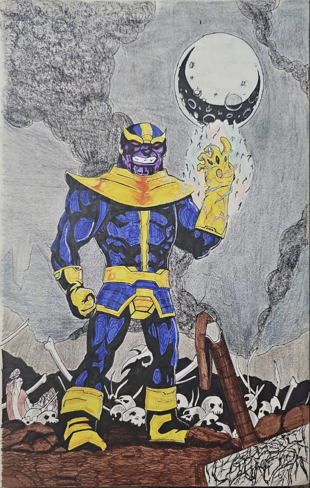

The Mad Titan’s Triumph
“The Mad Titan’s Triumph” was created on July 31, 2023, and uses a combination of fineliner pen, water marker, and color pencil. This piece was created after the release of Avengers: Endgame. The idea stemmed from imagining a comic-accurate, more vengeful Thanos triumphing over the MCU Avengers. I experimented with mixing colored fineliners and water markers to employ a different shading technique. The result is a detailed background that captures the intensity and drama of the scene, making it worthy of a cover issue.